龙芯杯备赛
ps：现在是北京时间 2022/3/8 13:15，希望可以坚持
资料学习
《自己动手写CPU》
处理器与MIPS
本处内容大多在《计算机组成原理》课上学习过，此处仅作为回顾
计算机的简单模型
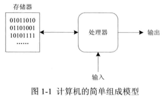
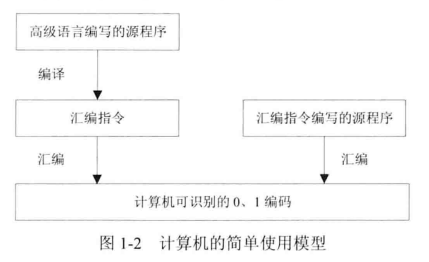
MIPS32 指令集架构
- CISC：复杂指令集计算机，每条指令对应编码串长度不一
- RISC：精简指令集计算机，每条指令对应编码串长度固定
- 数据类型
- 位(b)：1 bit
- 字节(Byte)：8 bit
- 半字(Half Word)：16 bit
- 字(Word)：32 bit
- 双字(Double Word)：64 bit
- 寄存器
- MIPS32 的指令除了加载/存储指令外，都是
使用寄存器或立即数作为操作数 - MIPS32 的寄存器分为两类：通用寄存器和特殊寄存器
- 通用寄存器：
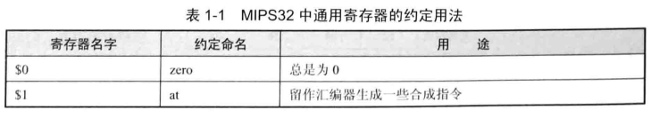
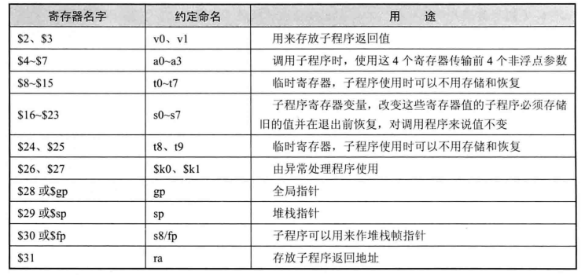 - 特殊寄存器：MIPS32 架构中定义的特殊寄存器有三个：
- PC：程序计数器
- HI：乘除结果高位寄存器（高32位）
- LO：乘除结果低位寄存器（低32位）
- 字节次序
- 大端模式：数据
高位保存在存储器的低地址中，低位保存在高地址中 - 小端格式则相反
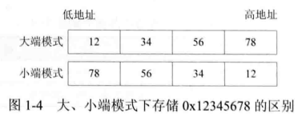
- 大端模式：数据
- 通用寄存器：
- MIPS32 的指令除了加载/存储指令外，都是
- 指令格式
-
MIPS32 架构中的所有指令都是32位，有三种格式，其中 op 是指令码、func 是功能码
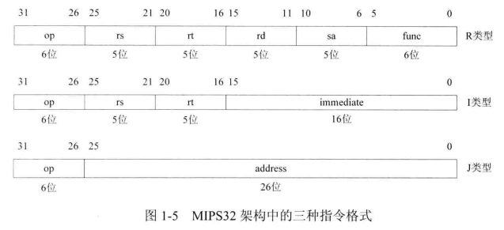 -
指令集
- 逻辑操作指令：实现逻辑与、或、异或、或非等运算
- 移位操作指令：实现逻辑左移、右移、算数右移等
- 移动操作指令：用于通用寄存器之间以及通用寄存器与HI、LO寄存器之间的数据移动
- 算术操作指令：实现加、减、比较、乘累加、除法等运算
- 转移指令：包括无条件转移和条件转移，用于程序转移到另一个地方执行
- 加载存储指令：用于从存储器中读取数据，或者向存储器中保存数据
- 协处理器访问指令：用于读取协处理器CP0中某个寄存器的值，或者将数据保存到协处理器CP0中的某个寄存器
- 异常相关指令：包括自陷指令、系统调用指令、异常返回指令
- 其余指令：nop, ssnop, sync, pref
-
- 寻址方式
- 寄存器相对寻址：主要用于加载/存储指令，其将一个
16 位的立即数做符号扩展，然后与指定通用寄存器的值相加，从而得到一个有效地址
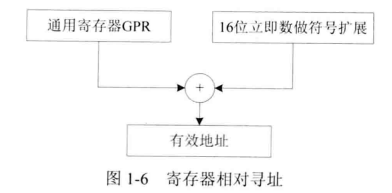 - PC 相对寻址：主要用于转移指令，在转移指令中有一个 16 位的立即数，将其左移两位并作符号扩展，然后与 PC 值相加，从而获得有效地址
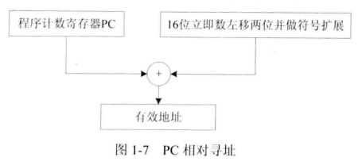
- 寄存器相对寻址：主要用于加载/存储指令，其将一个
- 协处理器 CP0
- 协处理器通常表示处理器的一个可选部件，负责处理指令集的某个扩展，拥有与处理器相独立的寄存器。
- 协处理器 CP0 的具体作用有：配置 CPU 工作状态、高速缓存控制、异常控制、存储管理单元控制等。
可编程逻辑器件与 Verilog HDL
可编程逻辑器件(PLD)概述
-
PLD 是上世纪 70 年代发展起来的一种新型器件，它的应用和发展不仅简化了电路设计，降低了开发成本，提高了系统可靠性，而且给数字系统的设计方法带来了革命性的变化
-
按照不同的内部结构可以将 PLD 器件分为以下两类：
- 基于乘积项(Product-Term)结构的PLD器件
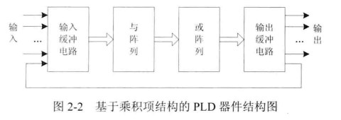 - 基于查找表(Look-Up Table, LUT)结构的PLD器件
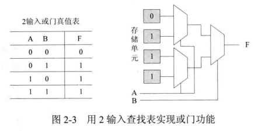
- 基于乘积项(Product-Term)结构的PLD器件
-
基于 PLD 的数字系统设计流程
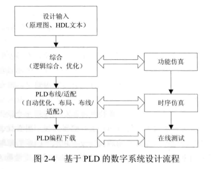
Verilog HDL 中模块的结构
- Verilog 程序的基本设计单位是“模块”(Module)，一个模块有其特定的结构。
1 | |
- Verilog 的模块完全定义在 module 和 endmodule 关键字之间。
- 考虑以下代码，其实现 32 位加法器模块，有两个输入信号 in1、in2，两者相加的结果通过 out 输出
1 | |
- 模块声明：包括模块名字，以及输入、输出端口列表，格式如下：
1 | |
- 端口定义：明确说明模块端口的方向，格式如下：
1 | |
- 数据类型说明：对模块中所有用到的信号（包括端口信号、节点信号等）都必须进行数据类型的定义。
1 | |
- 对于端口，可以将端口定义、数据类型说明都放在模块声明中，于是上文的 32 位加法器可以改为如下形式：
1 | |
- 逻辑功能描述
- 用 assign 持续赋值语句定义
- 用 always 过程块定义
- 调用元件（也称为元件例化）
Verilog HDL 基本要素
常量
- Verilog 中的常量(Constant)有三种：整数、实数、字符串。
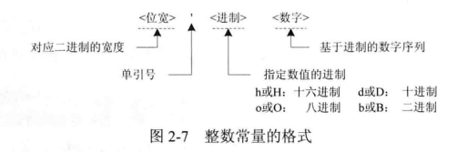
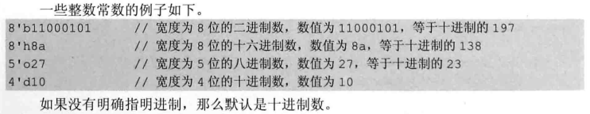
变量声明与数据类型
- 变量声明的格式如下所示：
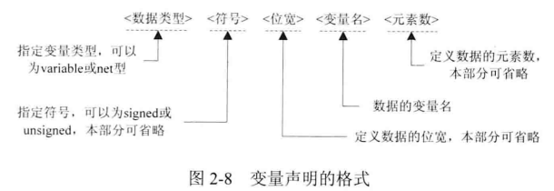- 只有数据类型、变量名是必要的，其他部分都可以省略
- 如果省略符号和位宽，那么根据数据类型设置为默认值；如果省略元素数，那么默认声明为 1
- 数据类型介绍如下：
- net 型变量
- net 型相当于硬件电路中各种物理连接
- 其特点是输出的值紧跟输入值的变化而变化。
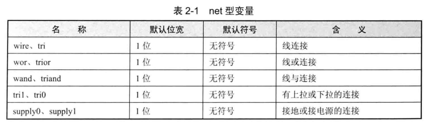 - wire 是最常用的 net 型变量
- 输入、输出信号没有明确指定数据类型时，都被默认为 wire 型
- wire 型信号可以用作任何表达式的输入，也可以用作 assign 语句和实例元件的输出
- 对于综合器而言，wire 型变量的取值可为 0, 1, X, Z
- 其中 0 代表低电平、逻辑0
- 1 代表高电平、逻辑1
- X 代表不确定或未知的逻辑状态
- Z 代表高阻态
- 如果没有赋值，默认为高阻态 Z
- variable 型变量
- variable 型变量可以保存上次写入数据，一般对应硬件上的一个触发器或锁存器等存储元件，但不绝对
- variable 型变量必须在过程语句（initial 或 always）中实现赋值，这种赋值方式称为过程赋值
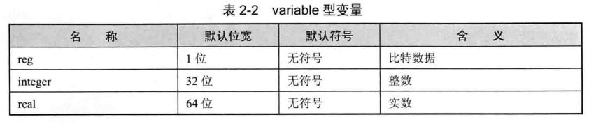
- 向量
- 变量声明时如果位宽为 1，那么对应的变量为标量；如果不为 1，那么对应的变量为向量。默认为标量
- 向量的位宽的定义形式为
[MSB : LSB]- 冒号左边的数字表示向量的最高有效位(MSB)，冒号右边的数字表示向量的最低有效位 LSB
1
2wire [3:0] bus; //4 位的 wire 型向量 bus，其中 bus[3] 是最高位，bus[0] 是最低位
reg [31:5] ra; //27 位的 reg 型向量 ra，其中 ra[31] 是最高位，ra[5] 是最低位 - 向量有两种，一种是向量类向量，另一种是标量类向量，可以使用关键字区分，如果没有明确指出，那么默认是标量类向量
1
2wire vectored [7:0] databus; //使用关键字 vectored，表示向量类向量
reg scalared [31:0] rega; //使用关键字 scalared，表示是标量类向量- 标量类向量可以任意选中其中一位或相邻几位，分别称为位选择(bit-select)和域选择(part-select)
1
2A = rega[6] //位选择，讲向量 rega 的其中一位赋值给变量A
B = rega[5:2]
- net 型变量
本博客所有文章除特别声明外，均采用 CC BY-SA 4.0 协议 ，转载请注明出处！